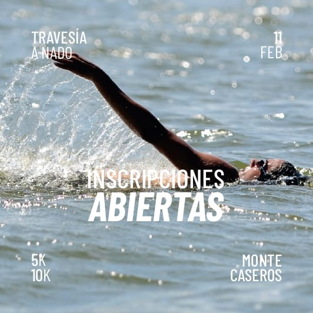
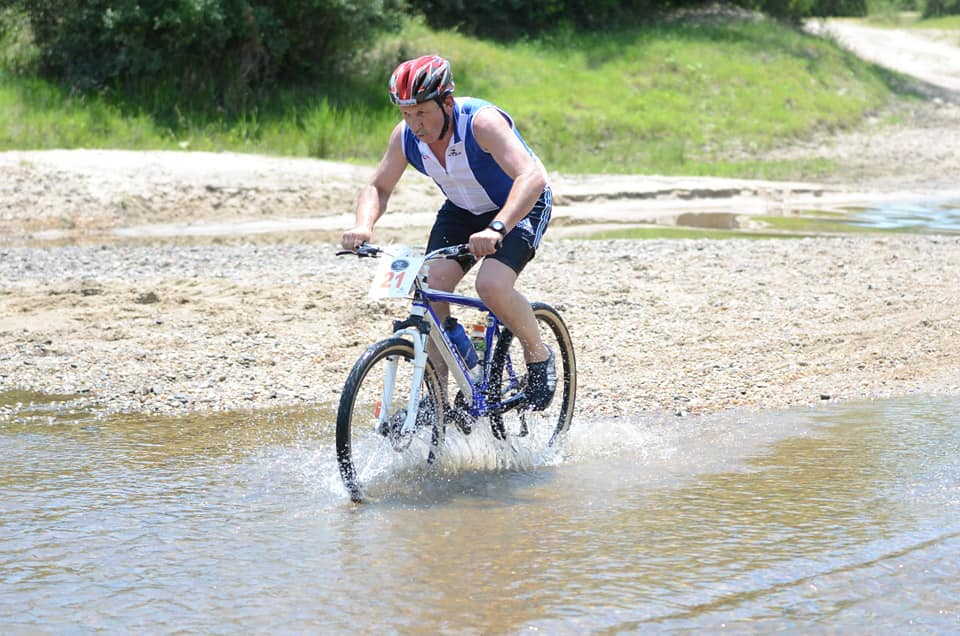
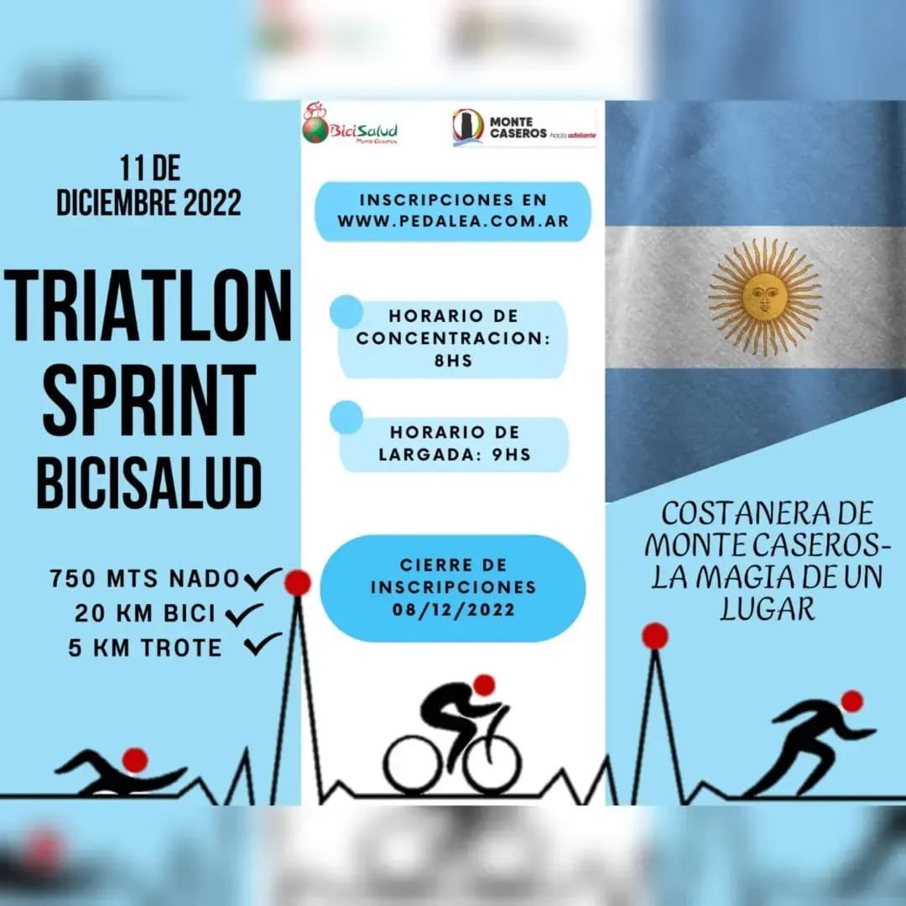
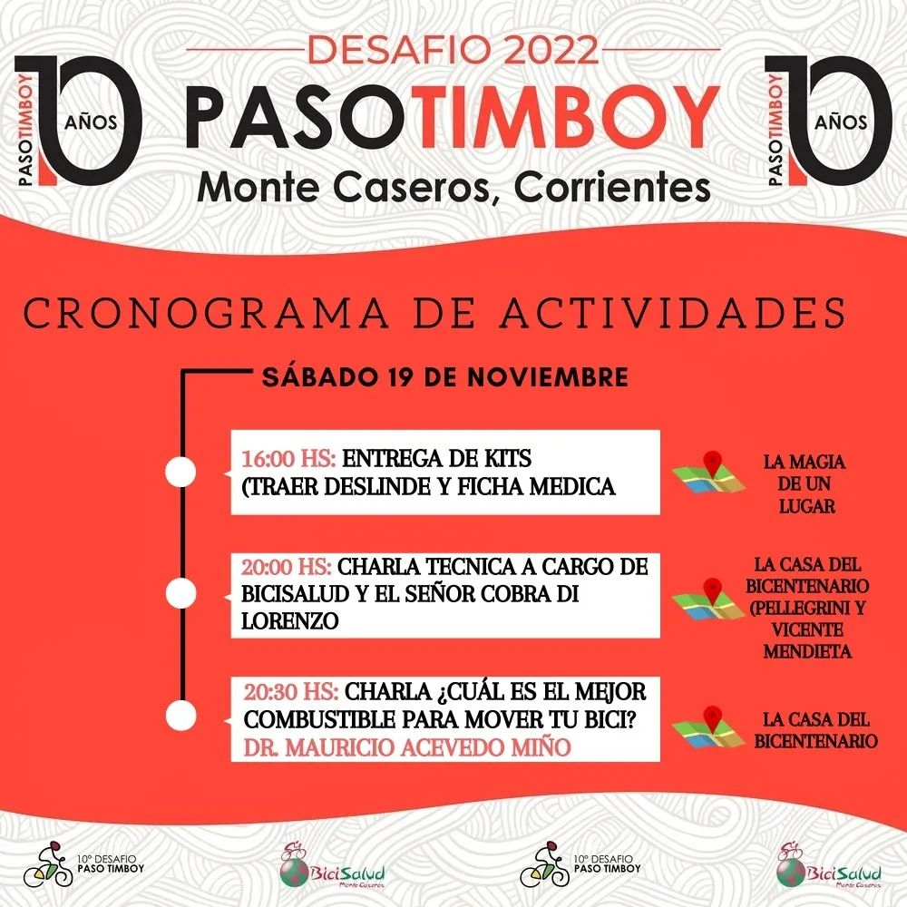
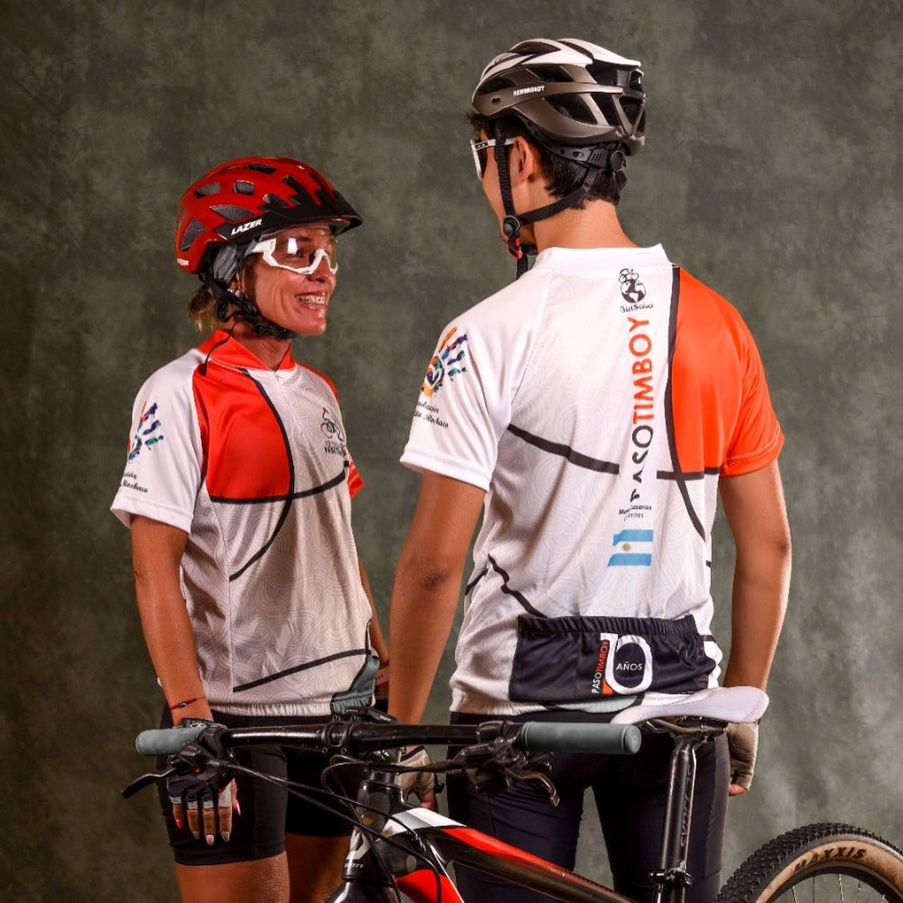
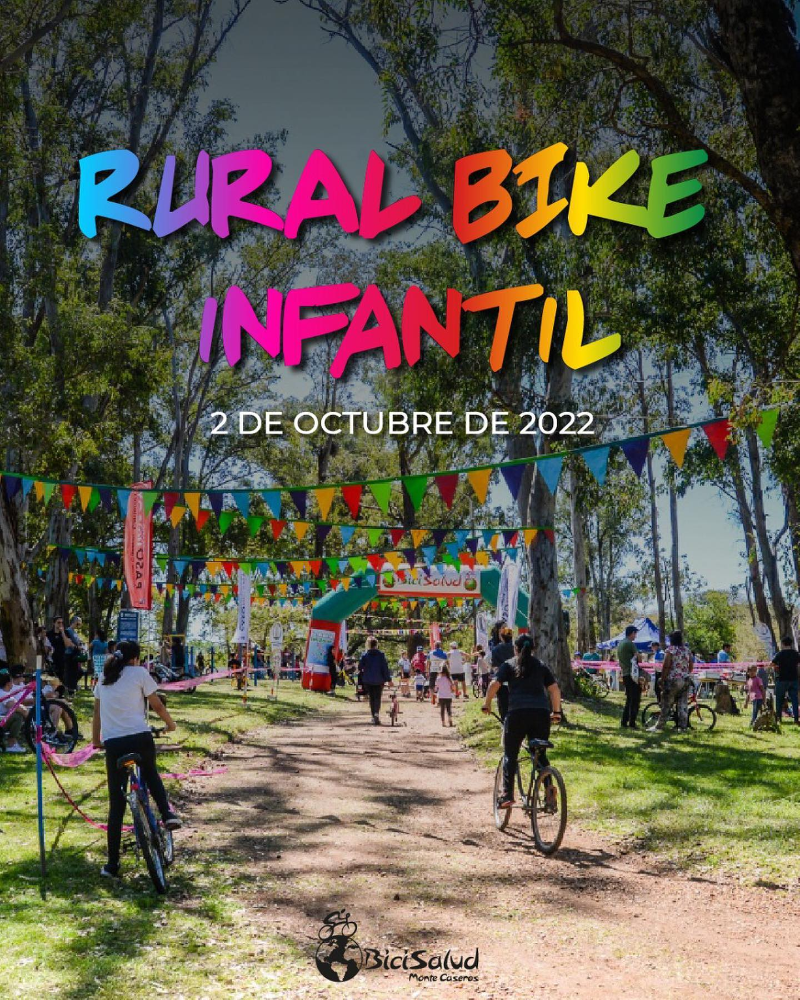

27
Diciembre
ARRANCAN LAS INSCRIPCIONES PARA LA DECIMA EDICIÓN DE LA TRAVESÍA A NADO
Buenos dias amigos invitamos a esta increíble travesía que van a cumplir 10 años. Vamos💪🏊♂️🏊♂️🏊♂️🏊♂️ El formulario de inscripción lo encuentran en el link 👇🏼 https://forms.gle/F157HiNXzBeqKQiL9 ⚠️ AVISO IMPORTANTE ⚠️ El costo hasta el 21-01 es de $5000, luego el mismo sufrirá modificaciones. Desafiate a vos mismo!!
30
Noviembre
DESDE BICISALUD RECORDAMOS a Eduardo “Botón” GALANTINI
“Guárdame el número 22- el loco- para el domingo” Esas fueron sus palabras; para participar en el Primer Desafío Paso Timboy año 2012, quien era entonces intendente de Monte Caseros, Eduardo "Botón " GALANTINI, con solo plantear la idea surgió su entusiasmo y una vez más aposto al deporte, a su gente, a su pueblo y dijo “si métanle gurises”. En conjunto con Juan Pujol nace nuestro querido Desafío Paso Timboy. Botón se subió a una bici (prestada seguramente) con el N.º 22 de compañero. Largamos en la escuela Agrotécnica rumbo a Juan Pujol… ¡Hasta siempre Botón! ¡Gracias por todo lo que hiciste por el deporte y por Monte Caseros! ¡Presente en nuestros recuerdos!
28
Noviembre
INSCRICIONES TRIATLÓN 🏊♂️🚴♂️🏃♀️
Buenos días amigos!!!! Nos preparamos para recibir el ⛱️🌞.!!! Y que mejor haciendo lo que más nos gusta. Largamos la temporada de verano con un Triatlon 🏊♂️🚴♂️🏃♀️ Este 11 de diciembre, en la costanera de Monte Caseros. INSCRIPCIONES https://pedalea.com.ar/eventos_masinfo.php?evento=127 Tenes opciones para armar tu equipo,.por consultas 📲 3775-493334 Laura o 3775-455492 Alejandra. Los esperamos! Cierre de inscripciones 8 de diciembre.
15
Noviembre
ÚLTIMOS DETALLES DESAFÍO PASO TIMBOY 2022
Buenos días amigos!!! Comenzamos con los últimos detalles😀, nos encontramos este sábado para las acreditaciones. En el predio de La magia de un lugar, costanera sur. (Mismo lugar de largada y llegada de las 3 distancia). ⚠️Es obligatorio presentar deslinde y ficha médica firmada, para retirar el kit. El horario de acreditación es de 16hs a 20hs. Luego nos trasladamos a las instalaciones del Bicentenario para escuchar las charlas programadas.🥰 Los esperamos para vivir el Timboy! 10 años disfrutando junto a todos.
14
Noviembre
REMERA 10 AÑOS DEL DESAFIO PASO TIMBOY! 🚴🏽♀️🚴🏽♂️
Buenas buenas amigos, tenemos el agrado de mostrarles lo que es la remera del Desafio 2022! Acaso no es una bomba? 🔥 Tenemos muchas emociones juntas! 🤪 Ansiedad, nervios, entusiasmo, alegría, preocupación, pasión.... porque faltan 6 dias para este gran desafío! Te invitamos tambien a que atesores este recuerdo y te saques una foto en nuestro banner, y si te animas, escribir o firmar y dejar plasmado tu sentimiento en él.
04
Octubre
2da EDICIÓN DEL RURAL BIKE INFANTIL
Yyyyyy aqui los resultados amigos!! Deslizá las imágenes para enterarte de los resultados! 🥇🥈🥉 Las fotos las podes conseguir comunicandote con Marcelo de @realvisionmontecaseros Su teléfono es 📲 +54 9 3775 44-8059 Gracias a todos por participar, esperamos volver a encontrarnos en una nueva edición 💪🏼
